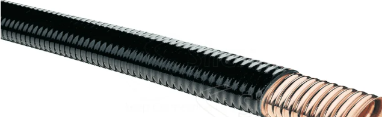

¿Qué es una guía de onda?
Es una estructura metálica hueca que transporta ondas electromagnéticas, especialmente en frecuencias altas como las microondas. Se usa en radares, satélites y comunicaciones de alta frecuencia.
Su diseño minimiza la pérdida de señal y mejora la eficiencia en la transmisión de energía electromagnética.
